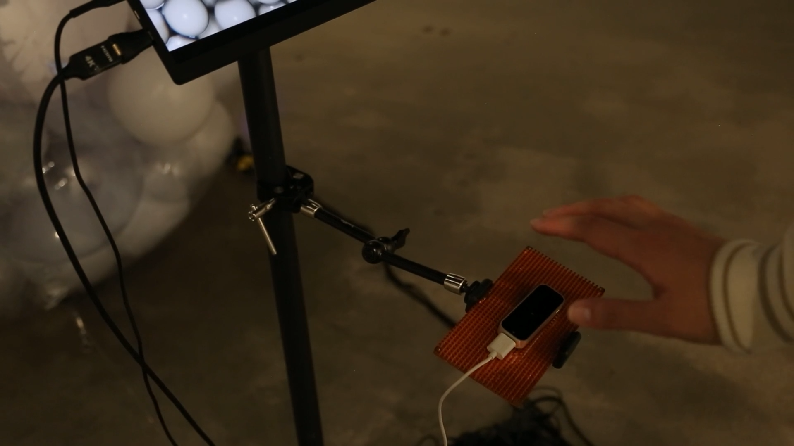
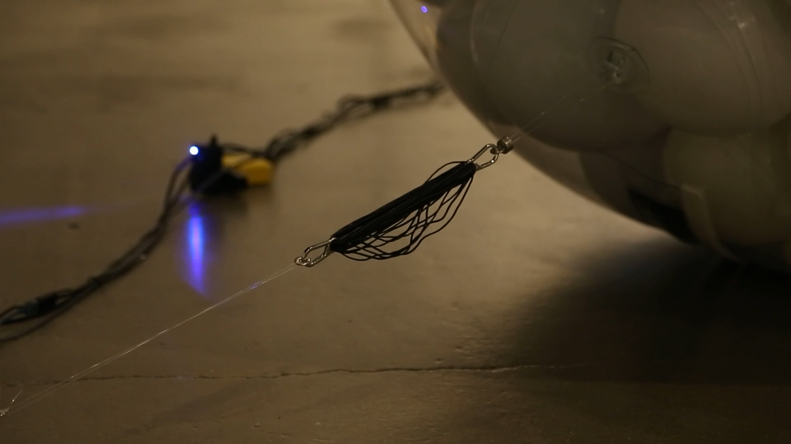
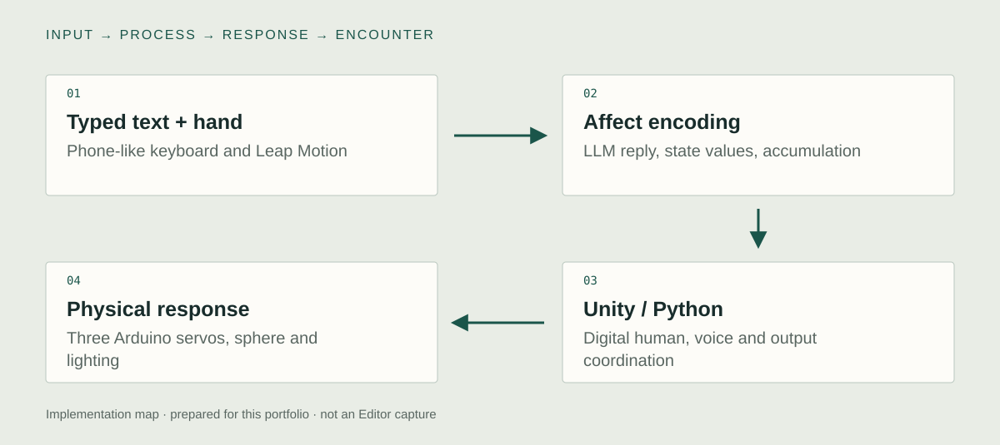

Unity implementation
LLM conversation & voice
I connected the digital human to a real-time LLM conversation and generated voice. A language response becomes an audible and visible event in the installation. Unity and Python connect those subsystems, while the exact response-state and sequencing code should be shown from the implemented project.

Hand-sensing input
I integrated hand input alongside language input. A physical gesture is a different signal from a conversational turn, even when both affect the same encounter. Keeping the two paths visible makes the implementation understandable without claiming that the system directly measures a participant's emotion.
Arduino servos & lighting
I connected Arduino servo motors and lighting to the digital system. A response can therefore have physical, vocal, and visual consequences. The sphere mechanism and hand-sensing apparatus are documented in existing images. Exact motor limits, protocol, and interrupted-input behavior need their own source or hardware capture.

System & design decisions

- 01Visitor input
Language and hand sensing
- 02Response state
LLM output and system coordination
- 03Embodied output
Digital human, voice, light, servos
- 04Human interpretation
The visitor decides how to respond
One encounter across several devices
A model reply, an audio response, an animated face, and a servo command do not naturally share the same execution path. The implementation connects those subsystems into a live installation.
Make internal control perceptible
Movement, light, voice, and timing give a system state a physical presence. They are control signals and performed behavior, not proof that the machine experiences the emotion attributed to it.
Preserve the sensing boundary
Hand input is part of the interaction loop. The hand-sensing path remains distinct from the language path even when both contribute to the same response.
Concept
Why can a person feel responsible for an artificial entity whose feelings cannot be assumed?
AI ZOO places a digital human, a moving transparent form, voice, and visitor input in the same space. The encounter begins before the visitor says anything: confinement and a request for help already establish expectations. Motor motion, speech, and delay then provide signals the person may interpret as affect.
Development
Retrospective planning notes, prepared for this portfolio.
Stage the asymmetry
Define the visitor's ability to intervene and the artificial figure's apparent inability to leave.
Choose an output vocabulary
Assign expressive roles to movement, light, voice, and response timing.
Connect the bench to the encounter
Inspect one input through each output channel, then judge how the combined response is read in the installation.
Further research
How does adding physical motion change the interpretation of the same AI response?
Vary: The servo-driven movement accompanying a fixed response.
Hold consistent: Dialogue, digital-human appearance, response timing, and spatial setting.
Proposed comparison. No controlled study or measured effect is reported.
Documentation
The artist confirms the LLM, digital-human, hand-sensing, Arduino servo, and light integration. Emotional responses are artistic and research questions, not reported study results.
Technical captures to add
Editor and runtime captures still needed to inspect the implementation:
- LLM conversation & voice
The incoming turn, generated reply, voice playback, and character response. Record one complete input-to-response turn with the actual control state visible.
- Hand-sensing input
The actual hand-sensor output and the component that receives it in the installation. Perform one controlled hand action and show the resulting system response.
- Arduino servos & lighting
The Arduino connection, one actual control command, and the connected motor or light. Send one implemented command, show the physical output, then record the available reset or stop behavior.
- Record a hand or language input, the response/control state, and servo, light, voice, and digital-human output together.
- Show the Arduino connection and one controlled motor command. Also show the implemented interrupted-input and reset behavior.